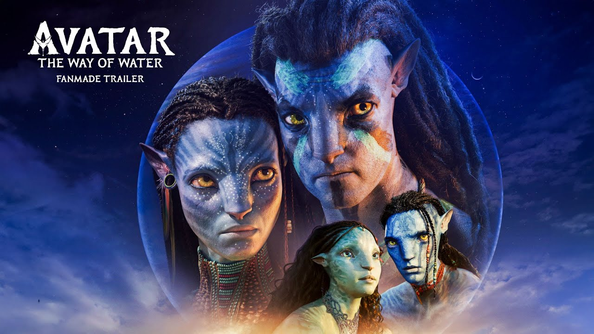

Inicio
Avatar: El camino del agua (2022) es la esperada secuela de Avatar (2009). La película sigue a Jake Sully y Neytiri mientras protegen a su familia y descubren nuevos clanes Na’vi en los océanos de Pandora. Con una mezcla de ciencia ficción, acción y drama, la cinta ofrece una experiencia visual revolucionaria que marcó un nuevo hito en la historia del cine.
